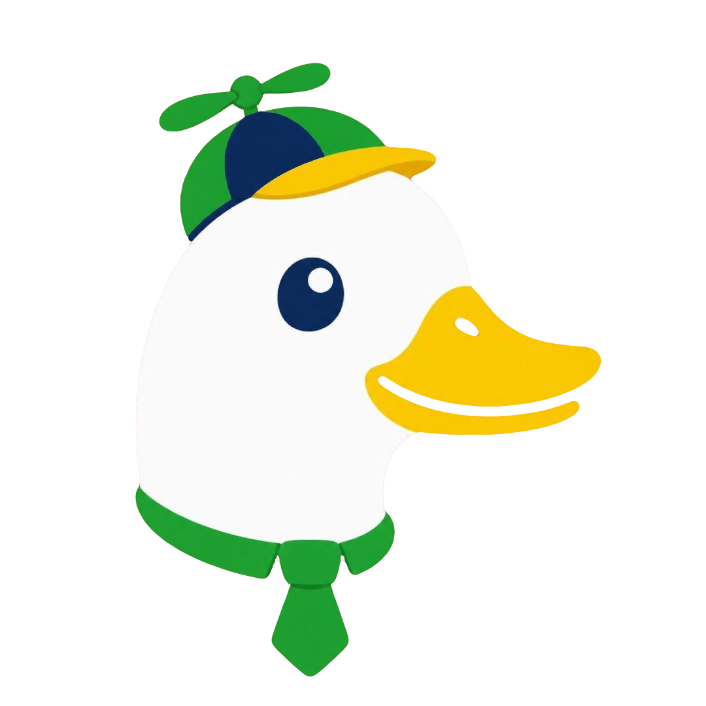

DuckWithIt
We're building software, games and tools worth sharing. From streamer-focused tools to creative projects, there's something interesting on its way.
Currently building

We're building software, games and tools worth sharing. From streamer-focused tools to creative projects, there's something interesting on its way.